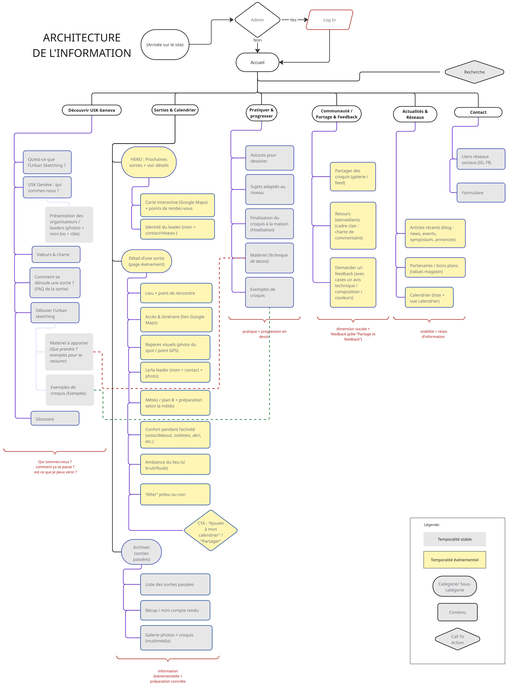
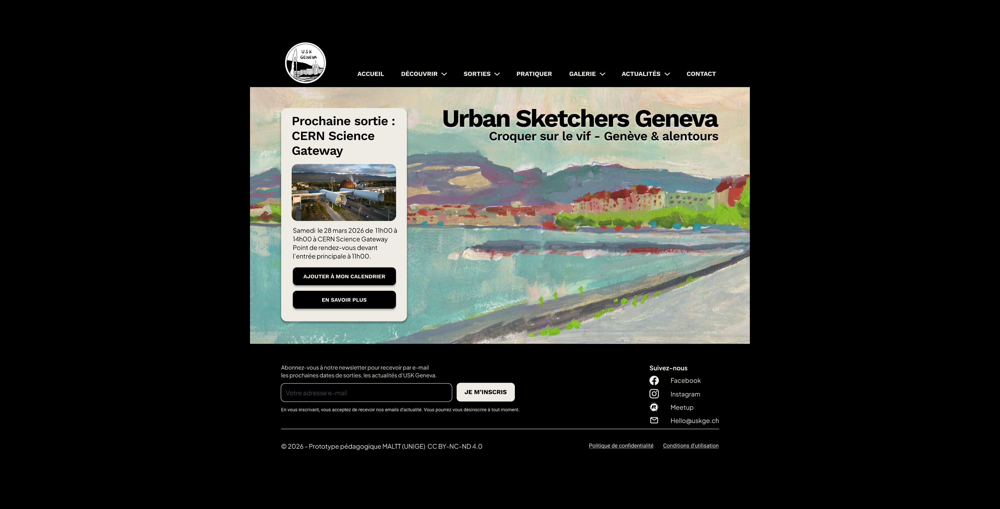
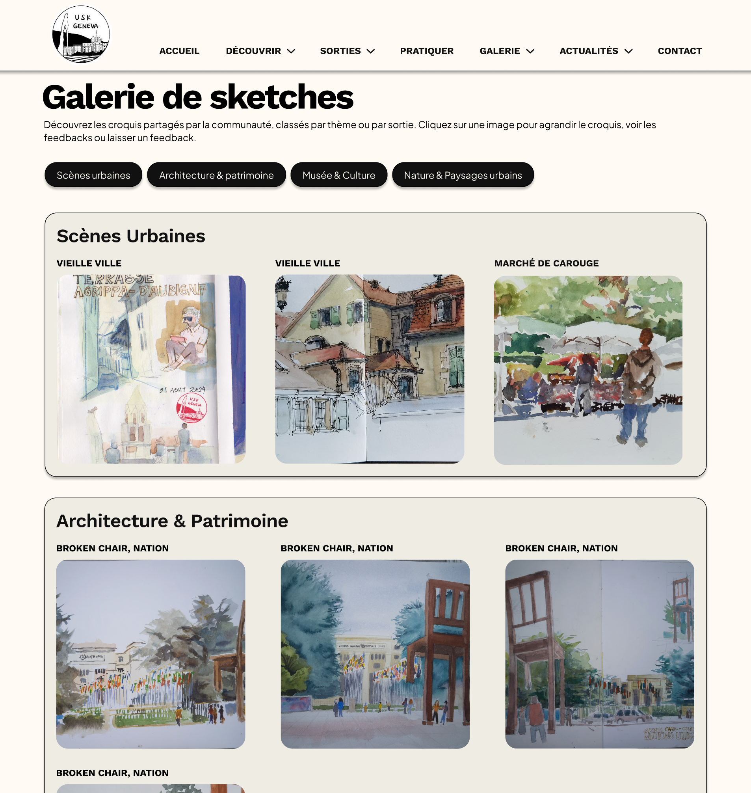

UX / UI case study
Urban Sketchers Geneva
A user-centered website concept for Urban Sketchers Geneva, an association for outdoor urban sketching. I designed the interactive prototype, ran user testing, and iterated the design from what the testing revealed.
Context
Urban Sketchers Geneva (USK Geneva) is a Geneva association dedicated to outdoor urban sketching, running a monthly Saturday sketchwalk. The client wanted a single, accessible online home for the group: a site that presents the activity, highlights upcoming outings, and encourages new people to discover it, understand how it works, and join. From the very first client interview, one need stood out above all others. The site had to feel reassuring and welcoming about how genuinely accessible sketching is.
Users & needs
The audience is both current members and prospective newcomers: retirees with free time, people who don't work weekends, students who want to draw, and the occasional visitor passing through Geneva. Most discover the group through Meetup or Instagram, drawn by the accessibility of the activity and the group's welcoming atmosphere. The recurring barrier that surfaced in research was a lack of confidence in one's own drawing level. So the design couldn't just present information, it had to lower that barrier and make a hesitant beginner feel it was for them.
Goal
Design a clear, reassuring, centralized website that helps beginners understand the activity and feel confident enough to show up to a first sketchwalk.
Process
I built an interactive prototype in Figma, then evaluated it through scenario-based user testing with six participants in natural, real-world settings. The protocol combined a 5-second test for first impressions, a series of realistic tasks on the prototype, a post-test UX questionnaire (UEQ), and a post-test interview. Usability issues were then diagnosed against Bastien & Scapin's ergonomic criteria and resolved in a second version.



What testing changed
On the UEQ, five of the six dimensions scored positive. Testers found the menu intuitive, the detailed "next outing" block reassuring for newcomers, and the interactive map genuinely useful for getting their bearings; the sketch examples made the activity feel approachable. But testing also surfaced problems that were invisible to us as designers: a gallery organized by neighbourhood was hard to read for non-locals, an "Archives" label was confused with the sketch gallery, and the outing leader's name was missed on a quick scan. Each drove a specific fix in version 2. The gallery was reorganized by theme instead of geography, the information architecture was restructured (a summary on long pages, Gallery and News split into thematic subpages), and ambiguous labels were renamed.
What I took from it
The clearest lesson was how many issues only appeared once real users moved through the flow. Internal review had caught none of them. Testing before finalizing the visual design is what turned a plausible-looking prototype into one grounded in how people actually read and navigate.